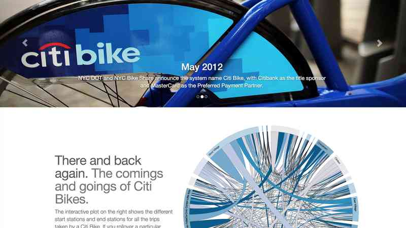

In 2014, I took CS 109 Data Science through Harvard University. As a final project, myself and 3 other classmates chose to
analyze Citibike, the New York bike system. Through the use of python and D3 we analyzed the make up and behavior of the historical
data of Citibike.